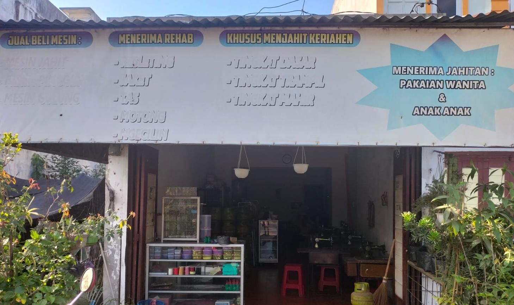
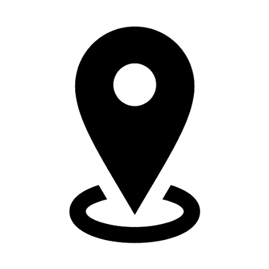

Belajar Menjahit Jadi Lebih Mudah
Mulai dari dasar hingga mahir bersama instruktur profesional
Lihat Kelas
Mulai dari dasar hingga mahir bersama instruktur profesional
Lihat Kelas


Pemilik dan Instruktur Utama
Berpengalaman dalam bidang fashion dan menjahit sejak tahun 1985.
Kursus Mejahit KERIAHEN Didirikan pada tahun 2003 Oleh Ibu Masrida Wati Dawlay atau biasa di panggil buk ida.
Membantu masyarakat mengembangkan keterlampilan menjahit yang bermanfaat
untuk kebutuhan pribadi maupun peluang usaha.
Berawal dari keinginan untuk menciptakan tempat belajar yang nyaman dan terjangkau,
KERIAHEN hadir sebagai wadah bagi siapa saja yang ingin mempelajari dunia tata busana dari dasar hingga tingkat profesional.

085761569207
Daftar Sekarang